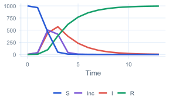
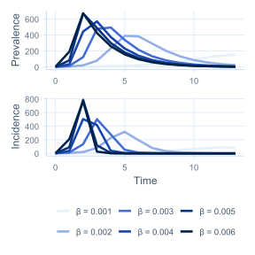
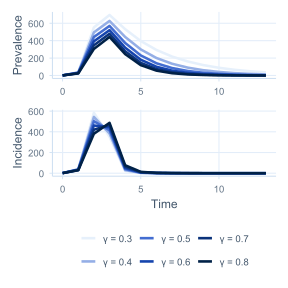

1 SIR
1.1 Model

\[\frac{dS}{dt} = -\beta SI = -\lambda S \tag{1.1}\]
\[\frac{dI}{dt} = \beta SI - \gamma I = \lambda S - \gamma I \tag{1.2}\]
\[\frac{dR}{dt} = \gamma I \tag{1.3}\]
- \(\beta\): effective contact rate.
- \(\gamma\): removal rate.
- \(\beta I = \lambda\): the rate from S to I is called force of infection.
1.2 Assumptions
- Each member of a population is either susceptible, infectious, or recovered (Driessche, 2017).
- The disease spreads through direct contact between susceptible and infected individuals.
- Well-mixed population, or homogeneous mixing (represented by a single effective contact rate \(\beta\)) (Becker & Grenfell, 2017).
- In the most basic form it considers a “closed population” without demographics (no births, deaths, or migration) (Keeling & Rohani, 2011), make sense when the disease is short lived compared with the population lifetime (Driessche, 2017).
- There is no latent period, individuals become infectious immediately upon contracting the disease.
- The effective contact rate \(\beta\) and recovery rate \(\gamma\) are constant over time.
- Infectious disease properties are for a single pathogen (Becker & Grenfell, 2017).
- Recovered individuals gain lifelong immunity.
1.3 Density or frequency-dependent
Both models compute the force of infection \(\lambda\) on a susceptible the same way — the effective contact rate times the prevalence \(I/N\):
\[\lambda \;=\; (\text{effective contact rate}) \;\times\; \frac{I}{N}\]
They differ only in how the effective contact rate is defined:
- Density-dependent: the rate scales with crowd size, \(\beta N\). The \(N\) cancels the \(/N\) from prevalence, so \(\lambda = \beta I\). Fits aerosol contacts (e.g. COVID-19).
- Frequency-dependent: the rate is a constant, \(\beta\). The \(/N\) has nothing to cancel, so \(\lambda = \beta I / N\). Fits sexually-transmitted diseases.
Transmission increases as density increases.
Aerosol contacts (COVID-19).
Transmission does not increase as density increases.
Sexually-transmitted diseases.
The two models differ in how a single susceptible “feels” the infectives. Define the force of infection \(\lambda\) — the rate at which any one susceptible becomes infected:
\[\lambda_{\text{DD}} = \beta I, \qquad \lambda_{\text{FD}} = \beta \frac{I}{N}\]
Hold the prevalence \(I/N\) fixed and grow \(N\): the DD force of infection grows with \(N\) (more bodies in the same space → more contacts), while the FD force is unchanged (each person makes the same number of contacts regardless of crowd size). The same ratio carries through to the basic reproduction number:
\[R_0^{\text{DD}} = \frac{\beta N}{\gamma}, \qquad R_0^{\text{FD}} = \frac{\beta}{\gamma}\]
The two parameterisations agree at exactly one population size; move \(N\) away from that calibration point and the predicted epidemics diverge sharply. The illustration below makes this concrete.
1.4 Code
library(odin)
library(tidyr)
library(ggplot2)
library(RColorBrewer)
library(patchwork)Below is how we numerically solve the differential equations Equation 1.1, Equation 1.2, Equation 1.3 in R with the odin package.
odin_sir <- odin::odin({
# Derivatives
deriv(S) <- -beta * S * I
deriv(I) <- beta * S * I - gamma * I
deriv(R) <- gamma * I
deriv(CInc) <- beta * S * I
# Initial conditions
initial(S) <- S_init
initial(I) <- I_init
initial(R) <- R_init
initial(CInc) <- CInc_init
# Parameters and initial values
beta <- user(0.004)
gamma <- user(0.5)
S_init <- user(999)
I_init <- user(1)
R_init <- user(0)
CInc_init <- user(0)
})
sir_mod <- function(beta, gamma, S0, I0, R0, times) {
# Set values for a new run
odin_run <- odin_sir$new(beta = beta, gamma = gamma, S_init = S0, I_init = I0, R_init = R0)
# Run the model
out <- data.frame(odin_run$run(times))
# Compute incidence from cumulative incidence
out$Inc <- c(I0, diff(out$CInc))
out$CInc <- NULL
out
}1.5 Incidence or prevalence
Be careful of what kind of data we are using to fit the model:
- Incidence: use the \(\beta SI\) part.
\[\text{Incidence} = \frac{\text{Number of new cases during a period}}{\text{Population at risk during the same period}}\]
- Prevalence: use the I compartment.
\[\text{Prevalence} = \frac{\text{Number of existing cases at time t}}{\text{Total population at time t}}\]
There are two ways to compute incidence.
- While writing the differential equations, we tell
odinto compute the cumulative incidence, then compute the incidence by usingdiff()on the cumulative incidence.
# Cumulative incidence
deriv(CInc) <- beta * S * I
# Compute incidence from cumulative incidence
out$Inc <- c(I0, diff(out$CInc))- In this “closed population”, the incidence is the number of individuals moving out of \(S\) in each time step. So we can compute it from the \(S\) column. Let compare it with the previous method.
pred <- sir_mod(beta = 0.004, gamma = 0.5, S0 = 999, I0 = 1, R0 = 0, times = 0:13)
tmp <- pred
tmp$Inc2 <- c(tmp$I[1], -diff(tmp$S))
tmp[,"Inc-Inc2"] <- round(tmp$Inc - tmp$Inc2)
tmp[,c("Inc", "Inc2", "Inc-Inc2")]Now let have a look at the output.
head(pred)Code
df_plot <- pivot_longer(pred, cols = S:Inc, names_to = "comp", values_to = "n")
ggplot(df_plot, aes(x = t, y = n, color = comp)) +
geom_line(linewidth = 1.2) +
scale_color_idm(breaks = c("S", "Inc", "I", "R")) +
labs(color = NULL, y = NULL, x = "Time") +
theme_idm() +
theme(legend.position = "bottom")
The time to peak of incidence is earlier than prevalence:
- Incidence reflects the immediate rate of new infections, the peak of incidence is reached when the transmission rate begins to decline.
- Prevalence accumulates both new and existing cases. Even after the incidence starts to decline, the active cases who were infected before the incidence peak are still there waiting for recovering. Prevalence only starts to decline when the recovery rate surpasses the rate of new infections significantly.
Normally, public health officials are interested in the incidence in the general population (to track disease spread) and the prevalence in intensive care units (to ensure it does not exceed ICU bed capacity).
1.6 Sensitivity analysis
The effective contact rate \(\beta\) and the recovery rate \(\gamma\) both affect whether or not there is an epidemic. The total number of people in the population and the initial number of infected people have no effect on whether there is an epidemic.
Below is a function that take a range of values of parameters and compare the model outputs.
Code
sir_sa <- function(vals, parm, outcome, times, init_beta = 0.004, init_gamma = 0.5) {
pick_comp <- ifelse(outcome == "prev", "I", "Inc")
plot_lab <- ifelse(outcome == "prev", "Prevalence", "Incidence")
symb <- ifelse(parm == "beta", "\u03b2", "\u03b3")
l <- list()
for(i in 1:length(vals)) {
if (parm == "beta") {
pred <- sir_mod(beta = vals[i], gamma = init_gamma, S0 = 999, I0 = 1, R0 = 0, times = times)[, c("t", pick_comp)]
} else {
pred <- sir_mod(beta = init_beta, gamma = vals[i], S0 = 999, I0 = 1, R0 = 0, times = times)[, c("t", pick_comp)]
}
pred$comp <- paste0(pick_comp, i)
colnames(pred) <- c("t", "n", "comp")
l[[i]] <- pred
}
# Bind this list into a data frame
df_plot <- Reduce(rbind, l)
# Set level I1 < I2 < I3... according to the increase of beta values
df_plot$comp <- factor(df_plot$comp, levels = c(paste0(pick_comp, 1:length(vals))))
# Plot results
my_palette <- idm_blues(length(vals))
ggplot(df_plot, aes(x = t, y = n, color = comp)) +
geom_line(linewidth = 1.2) +
scale_color_manual(values = my_palette, labels = c(paste0(symb, " = ", vals))) +
labs(color = NULL, y = plot_lab, x = "Time") +
theme_idm()
}1.6.1 Effective contact rate \(\beta\)
Code
vals <- seq(0.001, 0.006, 0.001)
p1 <- sir_sa(vals = vals, parm = "beta", outcome = "prev", times = 0:13) + labs(x = NULL)
p2 <- sir_sa(vals = vals, parm = "beta", outcome = "inc", times = 0:13)
p1 / p2 + plot_layout(guides = "collect") & theme(legend.position = "bottom")
When \(\beta\) decreases, less susceptible individuals become infected per unit time:
- Time until peak increases: because the speed of susceptible individuals become infected is slower.
- Epidemic duration increases: the rate of new infections slows down so it can lead to a longer epidemic period, but depends on the balance between the infection rate and the recovery rate.
- Outbreak size decreases: \(R_0 = \frac{\beta}{\gamma}\), so if \(\beta\) decreases, \(R_0\) decreases, each infected individual infect less people on average.
- Lower epidemic peak: because fewer infections occurring simultaneously.
Interventions that decrease \(\beta\) cause a lower outbreak size and a lower epidemic peak. This effect is often referred to as “flattening the curve”.
1.6.2 Recovery rate \(\gamma\)
Code
vals <- seq(0.3, 0.8, 0.1)
p1 <- sir_sa(vals = vals, parm = "gamma", outcome = "prev", times = 0:13) + labs(x = NULL)
p2 <- sir_sa(vals = vals, parm = "gamma", outcome = "inc", times = 0:13)
p1 / p2 + plot_layout(guides = "collect") & theme(legend.position = "bottom")
When \(\gamma\) decreases, patients recover more slowly meaning that they remain infectious for a longer period:
- Outbreak size increases: since \(R_0 = \frac{\beta}{\gamma}\), a decrease in \(\gamma\) leads to an increase in \(R_0\), meaning each infected individual infects more people on average.
- Higher epidemic peak: with a higher \(R_0\) more individuals are infected after each generation.
- Time until peak may increases: the infected population takes longer to clear out due to slower recovery, but the exact timing of the peak also depends on the balance between infection and recovery rates.
- Epidemic duration slightly increases: for same reason as the peak time, the overall duration of the epidemic is prolonged due to slower recovery rates.
1.7 Corollaries
1.7.1 The threshold phenomenon
From Equation 1.2:
\[\frac{dI}{dt} = \beta SI - \gamma I = I(\beta S - \gamma)\]
The infection “dies out” when:
\[\frac{dI}{dt} < 0 \Leftrightarrow \beta S - \gamma < 0 \Leftrightarrow S < \frac{\gamma}{\beta}\]
The proportion of susceptibles in the population must exceed this critical threshold \(\frac{\gamma}{\beta}\) for an infection to invade (Keeling & Rohani, 2011).
The inverse of the relative removal rate is called the basic reproductive ratio \(R_0 = \frac{\beta}{\gamma}\) (Keeling & Rohani, 2011). See Definition 1 for more details.
1.7.2 Epidemic burnout
Divide Equation 1.1 by Equation 1.3:
\[\frac{dS}{dR} = \frac{-\beta S I}{\gamma I} = -\frac{\beta}{\gamma} S\]
Upon integrating with respect to R, we obtain:
\[S(t) = S(0)e^{-\frac{\beta}{\gamma} R(t)}\]
Given that \(e^x > 0 \quad \forall x\), therefore \(S(t) > 0\) there will always be some susceptibles in the population who escape infection, leading to an important counter-intuitive conclusion from this model:
The chain of transmission eventually breaks due to the decline in infectives, not due to a complete lack of susceptibles (Keeling & Rohani, 2011).